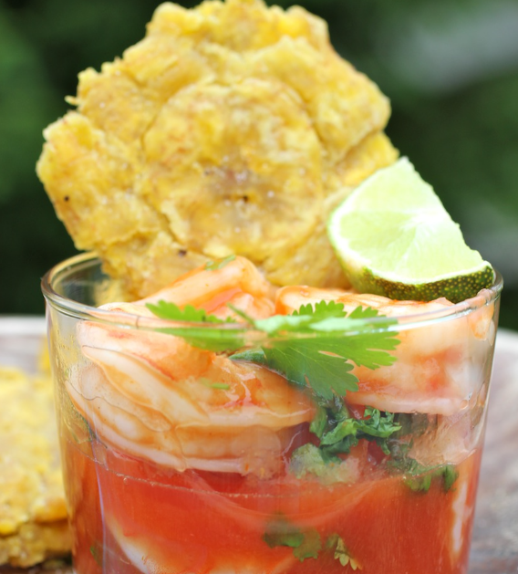

Colombian Shrimp Ceviche

Shrimp Ceviche is very popular in the coast od Colombia, but it is also enjoyed throughout the country. Keep this Ceviche refrigerated until ready to serve.
Ingredients
- 2 pounds large shrimp peeled and deveined
- 1/2 cup chopped onion
- 1/2 cup chopped fresh cilantro
- 1/2 cup chopped fresh parsley
- 1 garlic clove minced
- 1/2 cup fresh lime juice
- 1 cup ketchup
- 1/2 teaspoon Tabasco sauce
- 1 tablespoon olive oil
- Salt and pepper to taste
- Lettuce leaves and Saltine crackers for serving
Instructions
- In a medium pot, bring 4 cups of water to boil, turn off the heat, drop in the shrimp and cover. Leave the shrimp in the hot water for 1 minute. Drain off the water and place the shrimp in a plastic bowl.
- Add the ketchup, lime juice, onion, cilantro, parsley, Tabasco sauce, olive oil, garlic, salt and pepper to taste. Stir to combine all ingredients. Refrigerate and serve cold over lettuce leaves with saltine crackers.